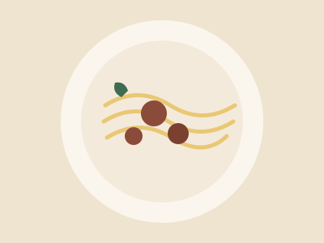
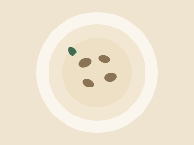
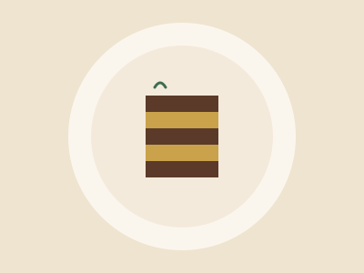

Pratos em Destaque
Os favoritos da casa, escolhidos pelos nossos clientes.

Tagliatelle ao Ragù
R$ 58
Massa fresca feita na casa, com ragù de carne cozido lentamente por 6 horas.

Risoto de Funghi
R$ 64
Risoto cremoso com mix de cogumelos frescos e finalizado com parmesão.

Tiramisù della Nonna
R$ 28
A sobremesa clássica italiana, na receita tradicional da família.